Abstract
iterative optimization attacks in this paradigm are limited by their per-input cost limits efficiency and scalability due to multistep gradient updates for each input, generative attacks alleviate these by producing adversarial examples in a single forward pass at test time. However, current generative attacks still adhere to optimizing surrogate losses (e.g., feature divergence) and overlook the generator’s internal dynamics, underexploring how the generator’s internal representations shape transferable perturbations.
To address this, we enforce semantic consistency by aligning the early generator’s intermediate features to an exponential moving average (EMA) teacher, stabilizing object-aligned representations and improving black-box transfer without inference-time overhead. To ground the mechanism, we quantify semantic stability as the standard deviation of foreground IoU between cluster-derived activation masks and foreground masks across generator blocks, and observe reduced semantic drift under our method.
For more reliable evaluation, we also introduce Accidental Correction Rate (ACR) to separate inadvertent corrections from intended misclassifications, complementing the inherent blind spots in traditional Attack Success Rate (ASR), Fooling Rate (FR), and Accuracy metrics. Across architectures, domains, and tasks, our approach can be seamlessly integrated into existing generative attacks with consistent improvements in black-box transfer, while maintaining test-time efficiency.
Key Contributions
- Generator–internal evidence for perturbation semantics. To investigate perturbation semantics within the generator, we partition the generator into early/mid/late blocks and quantify objectaligned semantics per block. Our analysis reveals that methods with lower variability in the foreground IoU across the intermediate blocks exhibit higher adversarial transfer. (§2.2)
- Generator–level semantic consistency guidance. By enforcing training-only semantic consistency at the generator’s early intermediates, we achieve improved adversarial transfer while keeping the adversarial objective on the surrogate unchanged. The guidance can be seamlessly integrated into existing generative attacks without altering the test pipeline at no additional inference cost. (§3)
- Comprehensive evaluation with an added reliability measure. We conduct a comprehensive transferability evaluation spanning classification (CLS) across architectures, domains, and dense prediction tasks (SS, OD). We also complement conventional Accuracy, ASR, and FR metrics by introducing a novel ACR metric to assess the attack reliability, measured by inadvertent corrections from intended misclassifications. (§4.2).
Motivation: Closer look into perturbation generator
Question 1: At what stage of perturbation synthesis do semantic cues deteriorate?
Question 2: Which generator blocks most influence transferability?
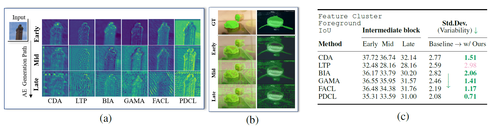
Our observations on the semantic variability within the perturbation generator:
(a) Generator intermediate feature maps for each block partition.
(b) Predicted masks from intermediate feature clusters on ImageNet-S from the baseline (BIA).
(c) Quantified variability in foreground IoU.
Our method distinction. Comparison of transfer-based generative adversarial attacks, highlighted by the method’s targeted stage in the training pipeline (left→right), and GT label requirement.
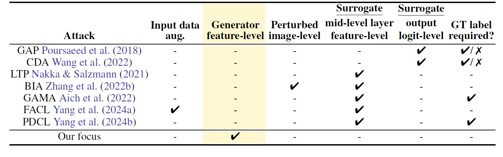
Perturbation Generation
Generation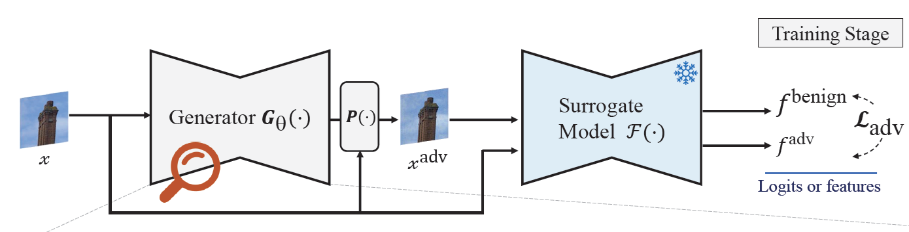
Evaluation Protocol
Evaluation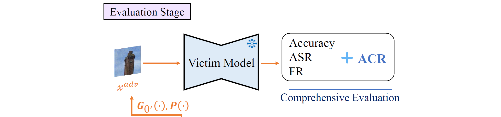
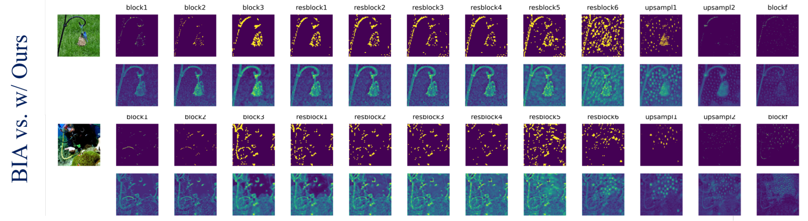
Visualization of generator intermediate block-level differences with the baseline (BIA): raw feature differences on bottom, and thresholded on top (normalized for illustration purposes only). With our generator-internal semantic consistency mechanism, we progressively guide adversarial perturbation to focus on the salient object regions initially and gradually disperse to surrounding background regions.
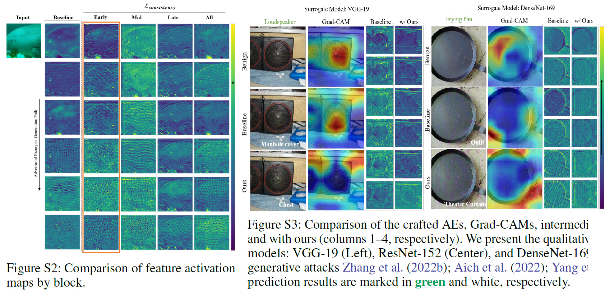
Comparison of block-wise feature activations and class activation maps. Our SCGA-trained generator produces more visually perturbed adversarial noise towards the end of the perturbation stages.
New evaluation metric: Accidental Correction Rate (ACR)
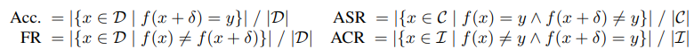
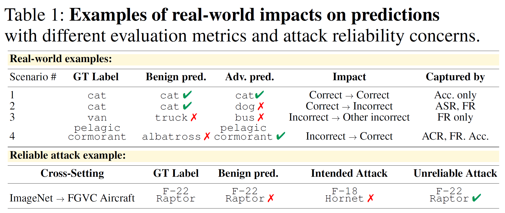
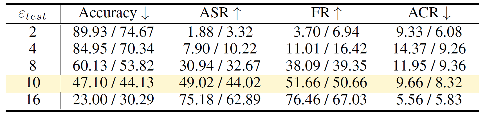
In real world, adversarial perturbations induce different outcomes depending on whether the clean is inherently predicted as correct or incorrect and the perturbed image triggers victim models to output the prediction as correct or incorrect.
Complementary role to ASR. At ϵ_test = 4, ACR (incorrect→correct) is 14% while ASR (correct→incorrect) is 8%, yielding a net gain of 6% correct predictions. Because ASR accounts for only harmful flips, it overlooks this positive balance; ACR makes it explicit.
ACR is non-monotonic, unlike Acc/ASR/FR. It peaks at ε = 4 and then falls as stronger noise overwhelms corrective effects. This trend offers a very different view from the defender’s side: evaluation should consider not only how many errors an attack creates but also how many it inadvertently corrects.Actionable insight. Defenders might tolerate or even harness low-budget perturbations that raise ACR, while attackers in safety-critical settings may need to penalize accidental corrections to avoid unintentionally improving model performance.
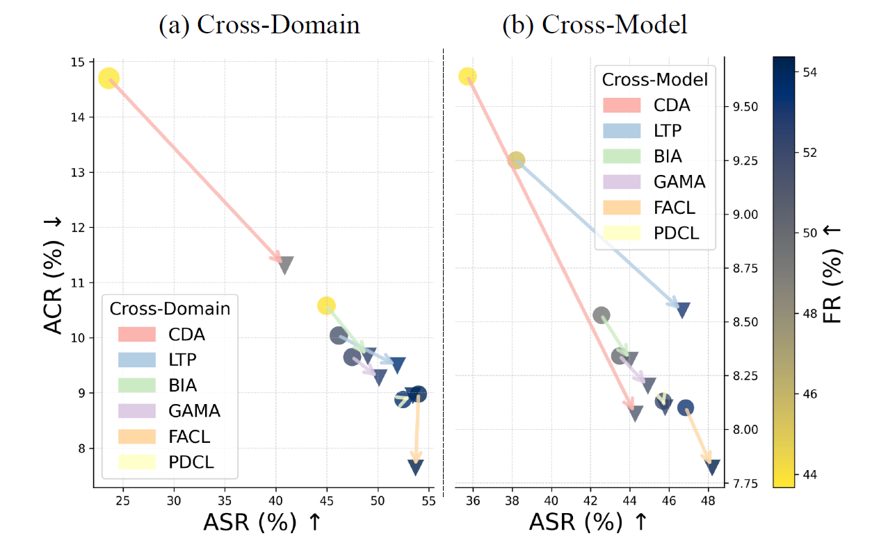
Our semantically consistent generative attack effectively exploits the generator intermediates to craft adversarial examples to enhance transferability from the baselines (● → ▼) across domains (a) and models (b).
Main Results
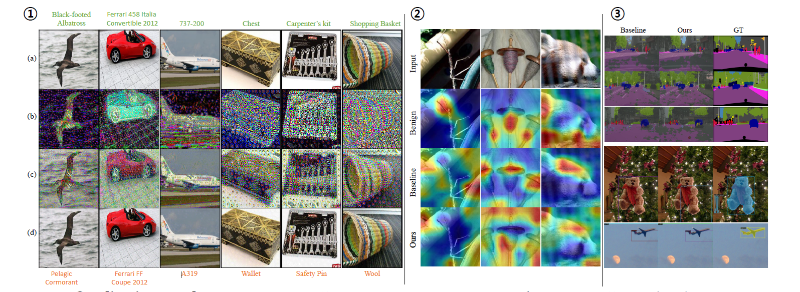
Qualitative results. Our semantically consistent generative attack successfully guides the generator to focus perturbations particularly on the semantically salient regions, effectively fooling the victim classifier. ①: (a) benign input image, (b) generated perturbation (normalized for visual purposes only), (c) unbounded adversarial image, and (d) bounded adversarial image across CUB-200-2011, Stanford Cars, FGVC Aircraft, and ImageNet-1K. The label on top (green) and bottom (orange) denotes the correct label and prediction after the attack, respectively ②: We highlight that our method induces Grad-CAM to focus on drastically different regions in our adversarial examples compared to both the benign image and the adversarial examples crafted by the baseline (BIA). Moreover, our approach noticeably spreads and reduces the high activation regions observed in the benign and baseline cases, enhancing the transferability of our adversarial perturbations. ③: Cross-task prediction results (SS on top, OD on bottom). Our approach further disrupts the victim models by triggering higher false positive rates and wrong class label predictions.
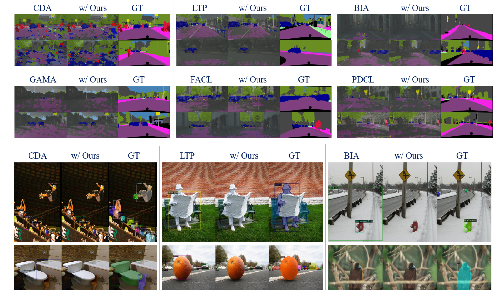
Semantic segmentation: we observe that our method does not just blur or hide parts of the road, but it actually makes the model stop recognizing entire road areas and even small objects like pedestrians or cars. The baseline attack might only erase a few isolated pixels or blend edges, but ours turns whole stretches of road into “ignore,” wiping out those predictions in one go. In other words, our method uniformly removes both large surfaces and tiny details, so the segmented map ends up missing key pieces of the scene that the baseline leaves untouched.
Object detection: our attack causes the model to stop predicting any localized boxes around objects (RoI), completely removing every predicted region of interest, whereas the baseline often leaves boxes in place or only shifts them slightly.
Ablation Study
Performance with a different generator architecture
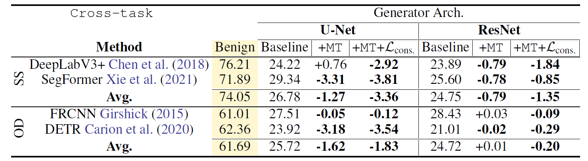
Robustness to defense mechanisms
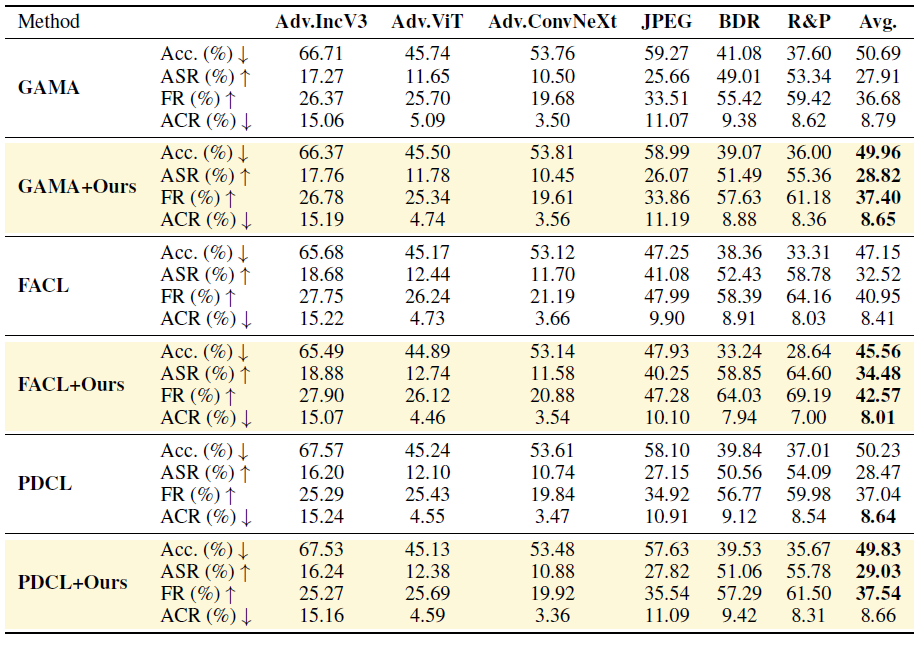
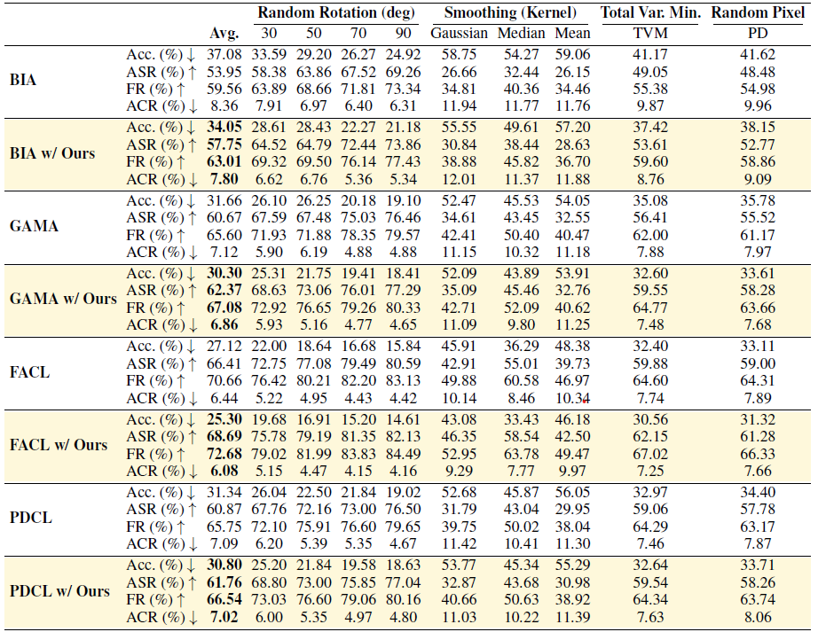
Extension to targeted generative attacks
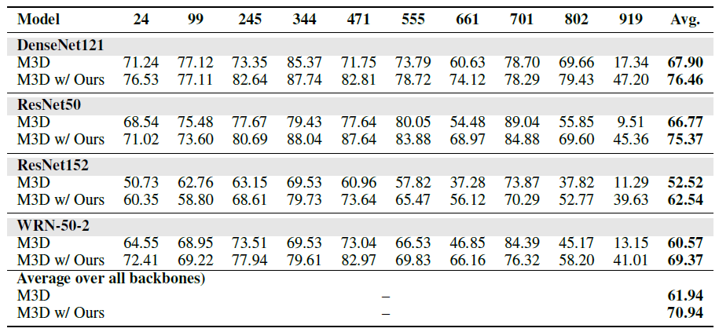
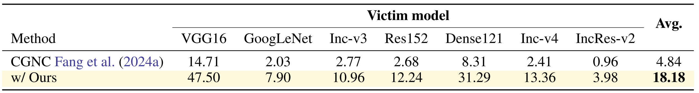
Overall Performance
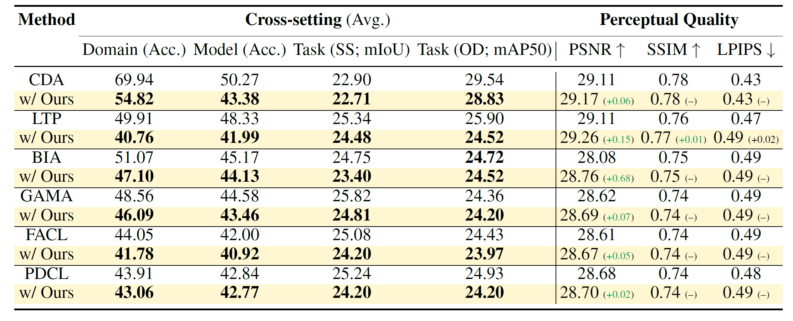
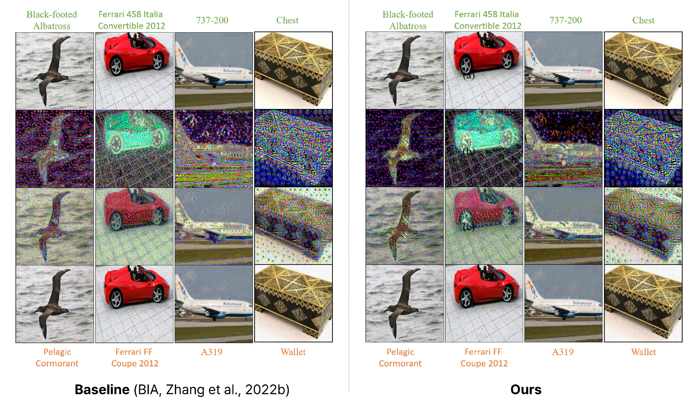
Citation
@inproceedings{jeong2026scga,
title={Improving Black-Box Generative Attacks via Generator Semantic Consistency},
author={Jeong, Jongoh and Yang, Hunmin and Jeong, Jaeseok and Yoon, Kuk-Jin},
booktitle={International Conference on Learning Representations (ICLR)},
year={2026}
url={https://openreview.net/forum?id=ibXhUapwcz}
}